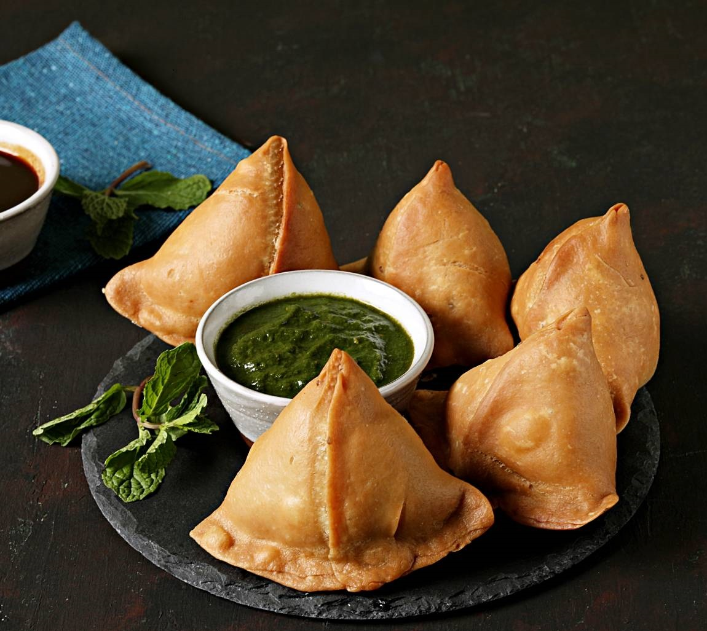

Gulab Jamun
Ingredients
- Sugar
- Bread
- Oil
- Frozen khoya
- Cardmon, Saffron
- Milk,water
Recipe
- Defrost frozen khoya and crumble it to powder and measure ¼ cup .
- Trim brown sides of the bread and place remaning portion in a blender and grind.
- Mix khoya and the bread crumbs,knead it sprinkling water/milk
- Roll into equal sized balls.Heat oil/ ghee in a kadai and fry in medium flame until brown in colour.
- Prepare sugar syrup by boiling sugar, water, cardamon, saffron.
- Drop the fried bread balls in hot sugar syrup and let it get soaked for 1 or two hours.

Samosa
Ingredients
- Maida flour
- Water
- Oil
- Potatoes
- Spice powders
- Ginger,garlic,peas,onion
Recipe
- Knead the dough till it gets smooth. Cover with a plate and leave it rest for 30 mins.
- Add cumin seeds,crushed ginger,garlic,green chilli,onions,salt,peas,all spice powders in oil and saute well. Add mashed potato and mix.
- Divide the dough and filling into equal parts.Take one part of the dough and spread into a thin circle, Cut in half
- Take on semi cricle and make cone shape.
- Take a portion of potato filling and place it in the middle and close the upper part of cone shape.
